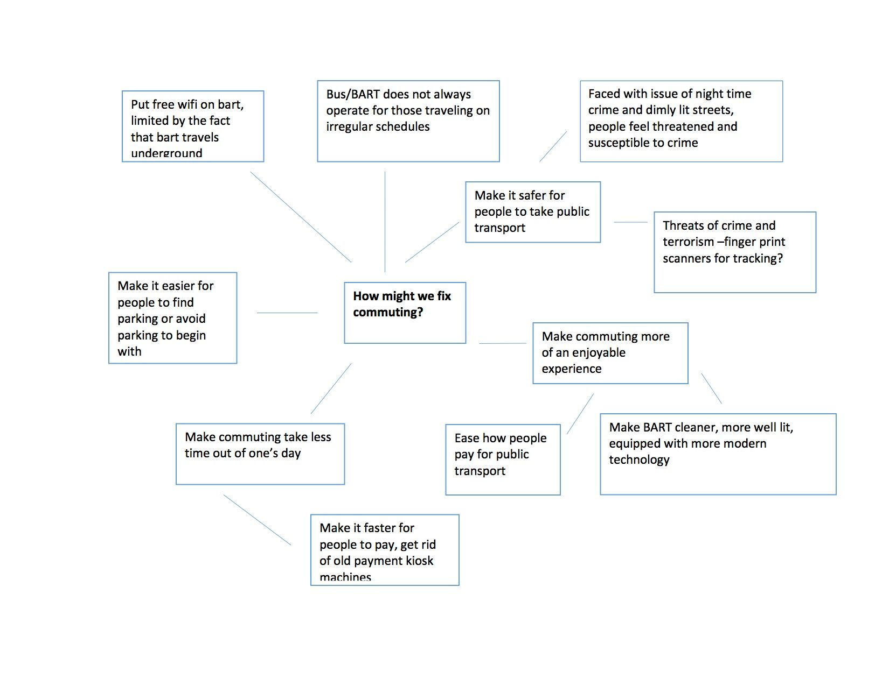
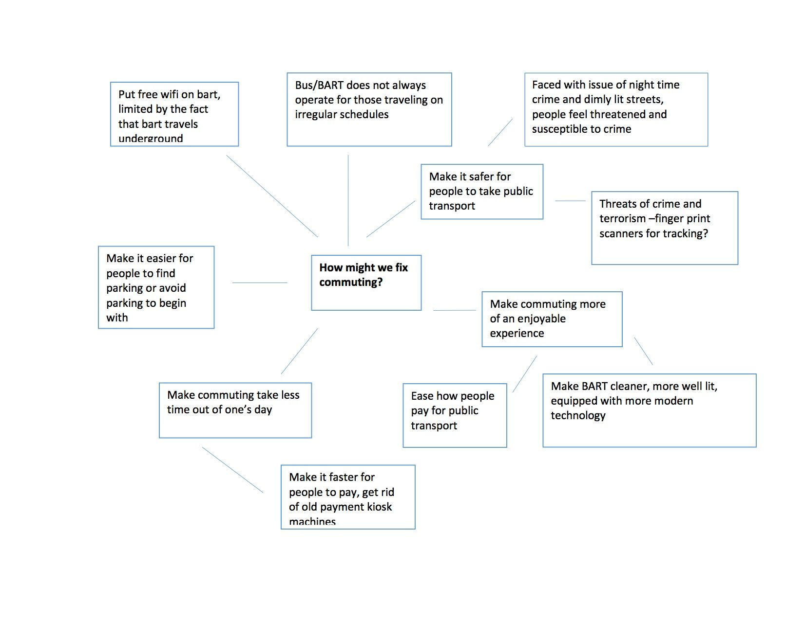
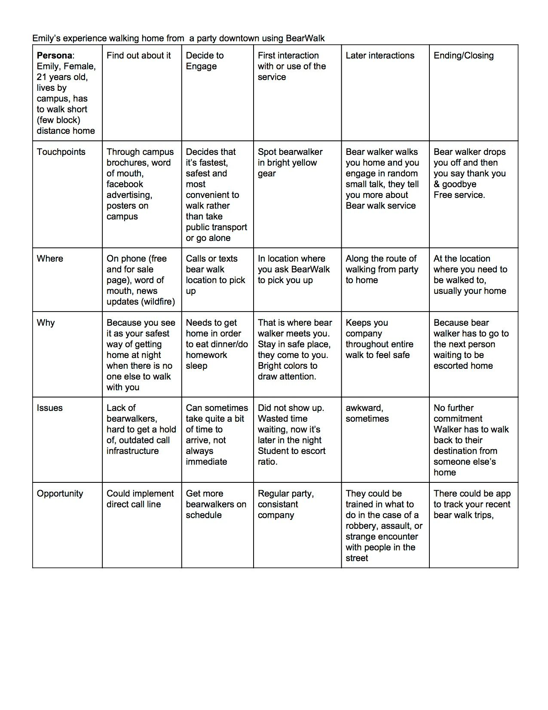
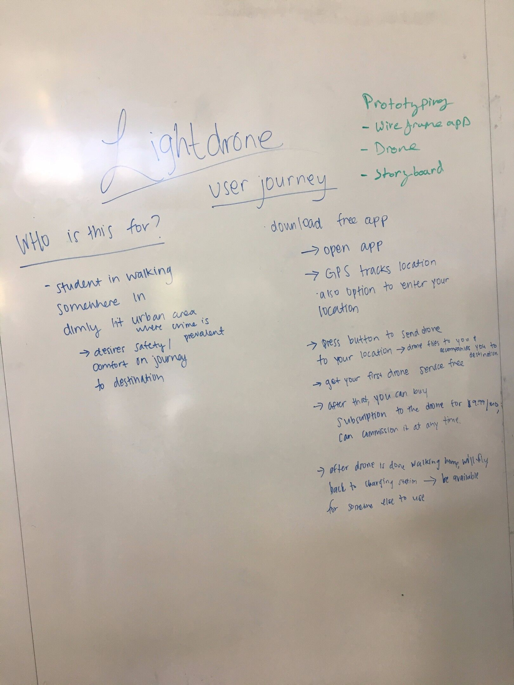

04 — Ideation/Business Model + UI/UX Design | Knight Light
Introduction
Knight Light is an autonomous drone service for university students. This was created for a design methodology course taken in my fall 2016 semester.
Team
I worked along side a team of 4 others to see this project from ideation to showcase. We all worked equally in the ideation side of the project. In the later stages, I worked with a partner on the UI/UX end of the project.
Prompt
How might we improve commuting?
Ideation
01 — Abstraction
We started with a web of abstraction, abstracting the question with potential solutions and problems faced by commuters.
We started with a web of abstraction, abstracting the question with potential solutions and problems faced by commuters.
 

02 — Competitive Analysis
We researched current solutions and put the effectiveness of each in a solution selection matrix .
We researched current solutions and put the effectiveness of each in a solution selection matrix .

We also did an in depth user experience breakdown for an existing solution.

03 — Initial Solution
Finally, we formed came to the solution of a autonomous drone security system. I fleshed out the idea on a white board.

Finally, we formed came to the solution of a autonomous drone security system. I fleshed out the idea on a white board.
04 — Talking to College Students
With this on hand, we spoke to our target audience first hand. We conducted a grand total of 50 interviews with UC Berkeley students and faculty.
In addition to these interviews, we spoke to professionals.
Campus Officer Wayde McAdam gave us insight to competing service, Bear Walk, and the state of safety measures taken currently:
“Bear Walk was canceled but reinstated by the chancellor out of necessity, in addition to the school not having any money and Wade stating UCB would not pay for such a system. Wade gets about 5 phone calls a day from parents concerned with safety.”
We also consulted UAVs@Berkeley, a drone club on campus, for technical and implementation advice.
Campus Officer Wayde McAdam gave us insight to competing service, Bear Walk, and the state of safety measures taken currently:
“Bear Walk was canceled but reinstated by the chancellor out of necessity, in addition to the school not having any money and Wade stating UCB would not pay for such a system. Wade gets about 5 phone calls a day from parents concerned with safety.”
We also consulted UAVs@Berkeley, a drone club on campus, for technical and implementation advice.
05 — User Persona

Low Fidelity Wireframe

Final Solution
Find a video demo to the app below.